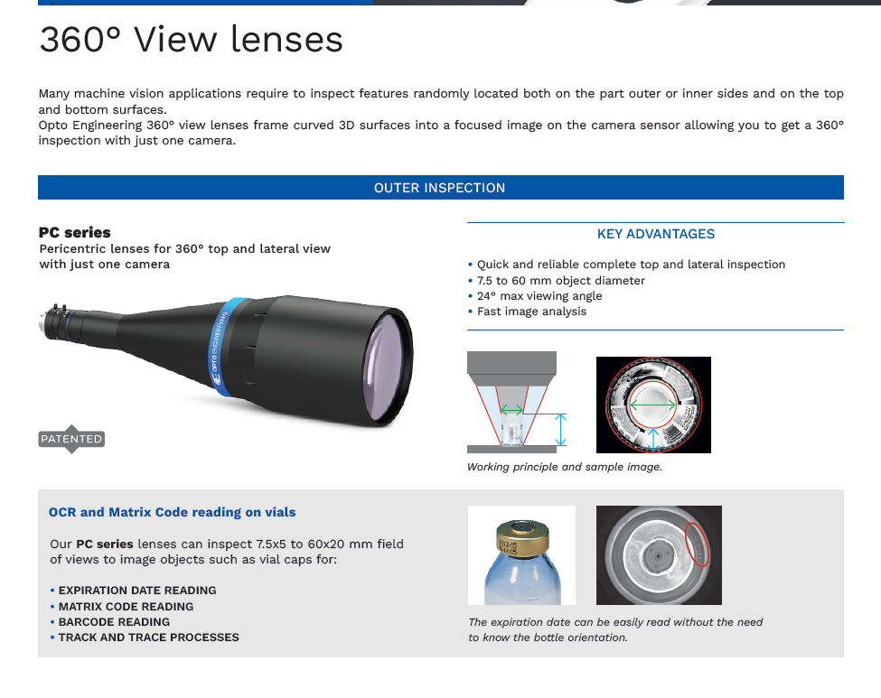
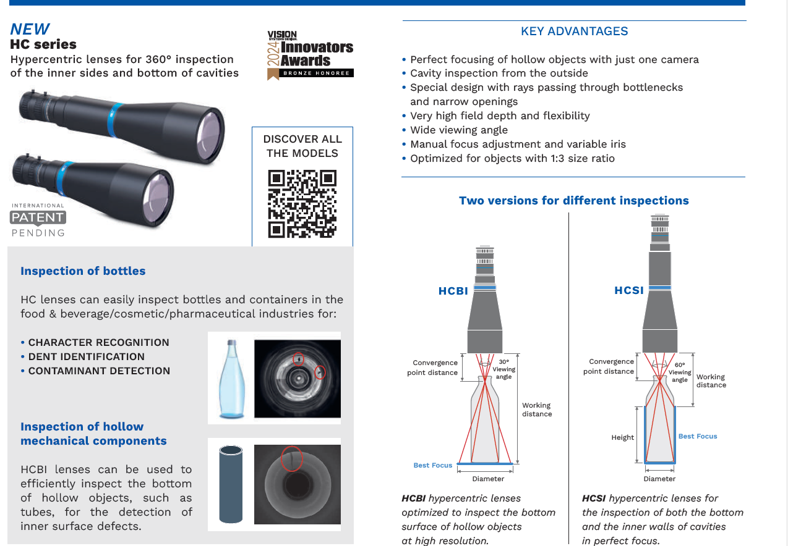

インテリジェント・エッジの核心：HIKROBOT SCシリーズ
HIKROBOT社のスマートカメラ（SCシリーズ）は、カメラ単体で画像認識と判定処理を行うことができる装置です。カメラ内部にAI（人工知能）やディープラーニングといった「脳」を搭載しており、外部のPCを必要とせずに、検品における合格・不合格の判断を自動的に行うことが可能です。
 図1：AI「脳」を内蔵しPCレス判定を実現するSCシリーズの構造
図1：AI「脳」を内蔵しPCレス判定を実現するSCシリーズの構造
技術の核心
HIKROBOT社の標準カメラ（MV-CAシリーズ）が「工場の目」として安定した画像取得を担うのに対し、スマートカメラ（SCシリーズ）は「解析・判定」までを実行できる点が根本的に異なります。これにより判定用のPCが不要になり、システム構成を劇的に簡略化できます。
SCシリーズ ラインナップ
| シリーズ | 特徴 | 主な用途 |
|---|---|---|
| SC2000 (エントリー) | 低コスト・超小型。基本的な有無検査・位置決め。 | 電子部品の有無検知など |
| SC3000 (スタンダード) | ディープラーニング搭載。高性能AIプロセッサ内蔵。 | 金属のキズ、汚れ外観検査 |
| SC7000 (ハイエンド) | 最大解像度・最高速処理。複雑な多項目検査を1台で。 | 自動車、医療機器検査 |
導入のメリットと価値
スマートカメラの導入により、このカメラ1台を設置するだけで「今日から検品作業を自動化」することが可能になります。従来人間が行っていた目視検査を代替し、工場における自動化、省力化、そして検査精度の向上に大きく貢献します。
HIKROBOT Official Website
撮像の純化：OPT ENGINEERINGの役割
AI（脳）が正しく判断するためには、ノイズのない「正解の画像」が不可欠です。 OPT Engineeringのテレセントリックレンズや360°レンズは、物理レイヤーで歪みをゼロにし、AIの演算負荷を劇的に下げます。
 図2：OPT光学系による高精度な360°一括撮像ソリューション
図2：OPT光学系による高精度な360°一括撮像ソリューション
1. 推奨2機種の比較と選定基準
ワークの検査箇所（外周か、内底面か）に合わせて、最適な光学アプローチを選択してください。
| 比較項目 | PC シリーズ（pc.png） | HC シリーズ（hc.png） |
|---|---|---|
| アプローチ | 「外周」を上から一括俯瞰 | 「内壁・底面」を外から覗き込み |
| 主な対象ワーク | 半導体パッケージ、コネクタ外周、キャップ、小ネジなど | シリンダー内部、ボトル・缶の内底面、穴の底など |
| 光学特性 | ペリセントリック 物体の側面と上面を同時に1つのカメラで撮像。 |
ハイパーセントリック 狭い開口部を通して、内部の側面と底面を同時に撮像。 |
| 最大のメリット | 360°側面検査の簡略化 ワークを回転させずに全周囲の傷や印字を一括確認。 |
非挿入での内部検査 プローブを穴に入れずに、外側から深部の欠陥を捕捉。 |
| 製品の特長 | 複雑な外形を持つ電子部品のバンプやピンの曲がり検査に最適。 | 容器内部の異物混入や、止まり穴の底面にある加工微細傷の検査に。 |
2. Opto Engineering社製レンズによる撮像メリット
特殊な光路設計により、従来のレンズでは不可能だった「死角のない検査」を実現します。
-
1カメラ・1ショットでの全方位撮像
複数のカメラや回転ステージが不要。装置の小型化とタクトタイムの劇的な短縮を可能にします。 -
高解像度・深い被写界深度
立体的なワークに対しても、上面から側面までシャープにピントを合わせる高度な設計。 -
半導体・電子部品への適応
物理的な接触を避けたいクリーンルーム内での、非接触・高速自動検査に威力を発揮します。
1. 推奨2機種の撮像イメージ詳細
PC シリーズ（外周検査）

特徴： ワークを包み込むような光路（ペリセントリック）で、上面と側面を同時に捉えます [cite: 5, 6]。
HC シリーズ（内面検査）

特徴： 放射状（ハイパーセントリック）に光が広がり、穴の奥底まで確実に可視化します [cite: 5, 6]。
技術資料ダウンロード
エッジAIの導入メリットから具体的な撮像事例まで、検討に役立つ詳細資料をご用意しました。
360°一括撮像ソリューション
内面検査の死角を解消するボアホールレンズや、液体レンズ搭載モデルによる高速リフォーカスの撮像事例集です。
360.pdf (Download)